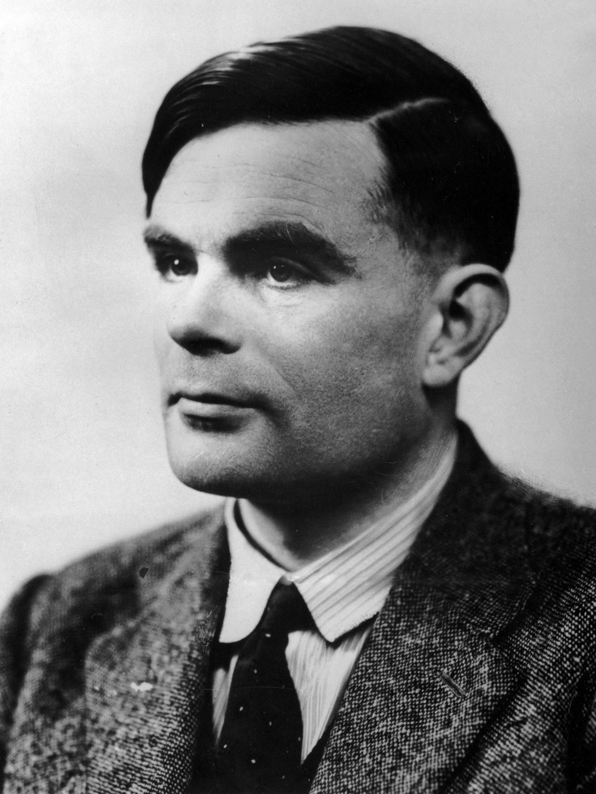
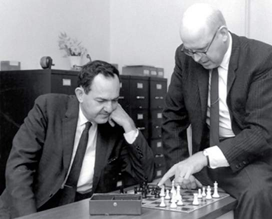
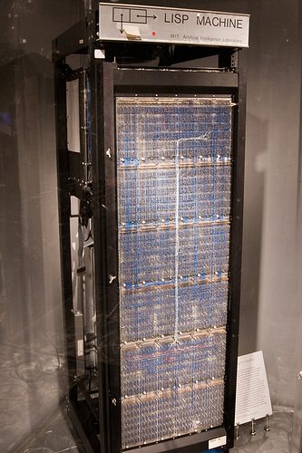
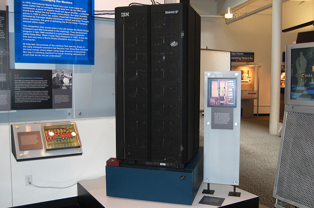
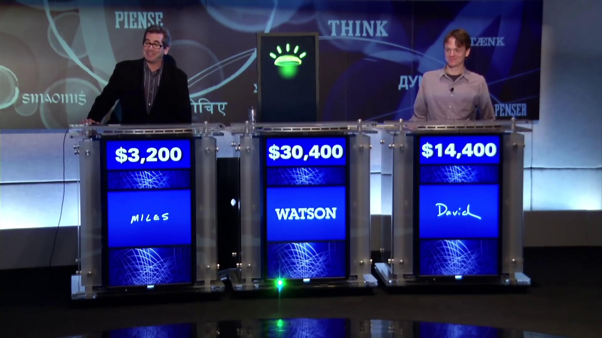

Historia de la IA
-
384 a.C.
Aristóteles describe los silogismos, métodos para el pensamiento formal y mecánico.
-
1623
Descartes propone que los animales no son más que máquinas complejas.
-
1642
Pascal inventa la calculadora mecánica.
-
1913
Russell y Whidehead publican Principia mathematica, revolucionando la lógica formal.
-
1941
Nace el primer ordenador programable.
-
1945
Nace el campo de la teoría de juegos, con la publicación de Theory of Games and Economic Behavior de von Neumann y Morgenstern.
-
1950
Alan Turing propone el Test de Turing.
-
1950
Isaac Asimov publica sus Tres Leyes de la Robótica.
-
1951
Se escriben los primeros programas de IA: un programa capaz de jugar al ajedrez, y otro a las damas.
-
1955
Arthur L. Samuel desarrolla un programa capaz de aprender a jugar a las damas por sí mismo. Nace el aprendizaje máquina o machine learning
-
1956
John McCarthy adopta el término "Inteligencia Artificial" en la Conferencia de Dartmouth de 1956.
-
1956
Newell, Shaw y Simon desarrollan la máquina de lógica teórica, capaz de resolver problemas imitando habilidades humanas.
-
1958
John McCarthy inventa el lenguaje de programación Lisp
-
1959
Newell, Shaw y Simon crean el General Problem Solver o resolutor general de problemas.
-
1965
El MIT desarrolla los primeros programas capaces de comprender lenguaje natural, responder preguntas y mantener diálogos.
-
1965
Nace Dendral, el primer sistema experto
-
1966
Se desarrollan las primeras redes semánticas.
-
1969
El Stanford Research Institute (SRI) desarrolla a Shakey the Robot, capaz de locomoción, percepción y solución de problemas.
-
1970
Linnainmaa publica el método inverso de diferenciación automática, posteriormente conocido como propagación hacia atrás, ampliamente utilizado en el entrenamiento de redes neuronales artificiales.
-
1971
Alain Colmerauer desarrolla el lenguaje de programación Prolog.
-
1973
El gobierno británico suspende la financiación de investigación en IA.
-
1979
El Stanford AI Lab desarrolla el Stanford Cart, el primer prototipo de vehículo autónomo, capaz de desplazarse evitando obstáculos.
-
1980
Se comercializan las máquinas Lisp.
-
1982
Nacen en Japón los ordenadores de quinta generación, que permiten un gran impulso de los desarrollos en IA.
-
1993
Nace Polly en el MIT, el primer robot que utiliza visión artificial.
-
1994
VaMP, el primer vehículo autónomo, conduce durante más de mil kilómetros por autovías de Paris.
-
1997
Deep Blue derrota a Garry Kasparov en una partida de ajedrez.
-
Finales de los 90
Los indizadores web (web crawlers), basados en IA, se vuelven esenciales en el uso de la World Wide Web.
-
2002
iRobot comercializa Roomba, aspiradoras autónomas capaces de reconocer y evitar obstáculos.
-
2004
Los rovers Spirit y Opportunity de la NASA exploran de forma autónoma la superficie de Marte.
-
2005
Nace Blue Brain, persiguiendo simular el cerebro a nivel molecular.
-
2009
Google desarrolla su primer vehículo autónomo.
-
2011
Watson de IBM derrota a dos campeones del concurso de televisión Jeopardy!.
-
2016
AlphaGo de Google derrota a Lee Sedol en una partida de Go.
-
2018
Google anuncia Google Duplex, que imita el habla humana y es capaz de concertar citas por teléfono.
La historia de la Inteligencia Artificial (IA) se inicia en la antigüedad, con los primeros mitos que introducen la idea de máquinas inteligentes.
Posteriormente, los filósofos clásicos plantarían la semilla de la IA moderna mediante el estudio del razonamiento formal, entendiendo el pensamiento como una manipulación formal de datos.
Este camino culminó con la invención del ordenador en los años 1940, una máquina basada en la idea abstracta del razonamiento matemático.
1940-1952: El preludio de la IA

Alan Turing
El estudio de la lógica matemática llevó a principios del siglo XX a la teoría de la computabilidad de Alan Turing, quien sugería que, a partir de ceros y unos, una máquina puede simular cualquier deducción matemática. Esta idea, que los ordenadores pueden simular cualquier proceso de razonamiento formal, se conoce como la Tesis de Church-Turing.
Estas ideas, junto a descubrimientos concurrentes en neurobiología, teoría de la información y cibernética, dio lugar a que científicos de diferentes ámbitos comenzaron a discutir la posibilidad de crear un cerebro artificial.
McCullouch y Pitts, en 1943, desarrollaron su concepto de "neuronas artificiales", que se activaban o no en respuesta a la activación de neuronas artificiales a su alrededor.
1952-1956: El nacimiento de la Inteligencia Artificial

Herbert Simon y Allen Newell
En 1950, Turing propuso su Test de Turing, según el cual se consideraría inteligente a cualquier máquina cuyas respuestas no pudieran ser distinguidas de las de un humano.
En 1951, Arthur Samuel escribió un programa capaz de jugar a las damas, alcanzando habilidad suficiente para ganar a jugadores aficionados. La IA en los videojuegos ha continuado usándose como medida del progreso de la IA a lo largo de su historia.
Newell y Simon crearon en 1955 su Logic Theorist, un programa capaz de demostrar teoremas publicados en Principia Mathematica, encontrando incluso nuevas y más elegantes pruebas para algunos.
Impulsado por estos desarrollos, el campo de la investigación en Inteligencia Artificial nació en 1956 en Dartmouth College, a partir de los trabajos de Newell, Simon, McCarthy, Minsky y Samuel, quienes se convertirían en los padres fundadores de la investigación en IA. La conferencia de Dartmouth de 1956 sirvió para proponer que "cualquier aspecto del aprendizaje u otra facultad de la inteligencia puede ser descrito con tanta precisión que una máquina puede ser creada para simularla". Fue en esta conferencia cuando la Inteligencia Artificial obtuvo su nombre.
1956-1974: El auge de la IA
En los años siguientes se desarrollarían multitud de programas con éxito. Muchos de los primeros programas utilizaban el paradigma del razonamiento como búsqueda: para conseguir una meta, el programa avanzaba en una dirección, y si en algún momento no puede avanzar, volvería sobre sus pasos para probar otro camino, similar a como se resolvería un laberinto.

ELIZA
La principal dificultad era que, para muchos problemas, el número de posibles rutas a través del "laberinto" es astronómico.
Newell y Simon intentaron reducir la búsqueda implementando heurísticos o "reglas generales" en su programa, el General Problem Solver. En los años sucesivos, se desarrollarían otros programas capaces de realizar búsquedas de soluciones de formas más eficientes.
Otro ámbito con gran desarrollo fue el lenguaje natural. En estas décadas se desarrollaron las primeras redes semánticas, que representan conceptos como nodos, y relaciones entre conceptos como enlaces entre nodos. Estos desarrollos culminaron con el desarrollo de ELIZA, el primer chatbot, una IA capaz de mantener conversaciones, aunque de forma rudimentaria.
1974-1990: El invierno de la IA

Máquina Lisp
En 1974, los gobiernos americano y británico decidieron recortar los fondos para la investigación en IA, iniciando un periodo en el que obtener financiación para este tipo de investigación resultaba dificil.
En los años 80 el interés fue revivido por el éxito comercial de los sistemas expertos (un sistema computacional que imita la capacidad de tomar decisiones de un humano experto) y por el desarrollo de los procesadores de quinta generación, que permitían nuevas posibilidades en el ámbito de la IA.
Sin embargo, el fracaso comercial de las máquinas Lisp (ordenadores especializados en procesar el lenguaje Lisp, el más utilizado en IA) llevaron a un nuevo hiato aún más largo.
1990-2010: Resurgimiento

Deep Blue de IBM
En los años noventa y primeros años del siglo XIX, el incremento en potencia computacional y mayor énfasis en resolver problemas específicos, la incorporación de conocimientos de nuevos ámbitos (como la economía), y el compromiso de los investigadores a ceñirse a métodos matemáticos y estándares científicos, volvieron a impulsar el desarrollo de la IA en ámbitos como la logística, la minería de datos (data mining) o el diagnóstico médico, entre otros.
Entre otros hitos históricos, en 1997, el ordenador Deep Blue de IBM consiguó vencer a Garry Kasparov, el mejor jugador del momento, en una partida de ajedrez. En 2005, un robot de Stanford consiguió conducir de forma autónoma durante 90 kilómetros por un entorno urbano, evitando peligros y siguiendo las leyes.
Estos logros no se debían a nuevos paradigmas revolucionarios, sino al aumento de la velocidad y capacidad de procesamiento de los nuevos ordenadores.
2010-Actualidad: Deep learning, Big data e Inteligencia Artificial general
Ordenadores más potentes, mejoras en los algoritmos, y acceso a grandes cantidades de información permitieron avances en aprendizaje automatizado(machine learning) y percepción, y métodos de aprendizaje profundo (deep learning) ávidos de datos comenzaron a dominar la investigación en torno a 2012.
Los años que sucederían están dominados por el aprendizaje profundo, el Big Data (la recolección masiva de datos para su procesamiento), y la Inteligencia Artificial general o IA Fuerte, la rama de las ciencias de la computación que persigue comprender la esencia de la inteligencia y producir una máquina con inteligencia similar a la de un humano.
La investigación en esta área incluye robótica, reconocimiento de voz, reconocimiento de imágenes, procesamiento de lenguaje natural y sistemas expertos. Esta IA sería diferente a la IA Débil, o IA aplicada, desarrollada para resolver problemas específicos o tareas concretas. Una IA débil no trata de imitar al completo las capacidades cognitivas humanas.

Watson de IBM en Jeopardy!
En estos años se alcanzarían nuevos hitos en el campo de la IA. En 2011, el ordenador Watson de IBM derrotó a los dos mejores jugadores del concurso de televisión Jeopardy!. En 2016, el ordenador AlphaGo ganó al mejor jugador del mundo de Go, siendo el primer ordenador que consigue derrotar a un jugador profesional en igualdad de condiciones. En la actualidad, Google utiliza IA en más de 2700 proyectos. El crecimiento de las redes neuronales, facilitado por el desarrollo de la computación en la nube y el aumento de las herramientas de investigación y conjuntos de datos, también ha provocado una reducción significativa de los errores en tareas de procesamiento de imágenes.
Según el MIT, en 2018 una de cada cinco empresas habían incorporado IA en alguno de sus procedimientos o productos.